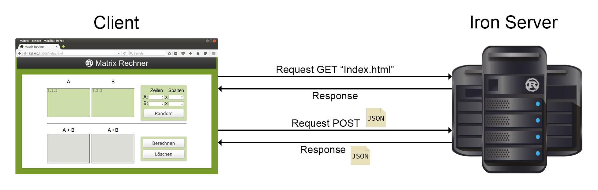

Rust wurde 2006 von Graydon Hoar entwickelt. 2009, als die Sprache so weit entwickelt war, dass man mit ihr einige Test durchführen und die Grundidee dahinter demonstrieren konnte, wurde das Projekt von Mozilla unterstützt [4]. Die Version 1.0 der Sprache wurde am 15.05.2015 veröffentlicht [5].
Bei Mozilla wird Rust vor allem zur Entwicklung von Prototypen neuer Webbrowserarchitekturen verwendet. Dabei soll verstärkt parallele Programmierung genutzt werden und diese sollen auch weniger anfällig für Sicherheitslücken sein, die beispielsweise durch C++ Programmierfehler entstehen können [4].
Vor allem die sich derzeit in der Entwicklung befindliche Layoutenging Servo, welche in Rust geschrieben ist, hat die Sprache beeinflusst [7]. .
Mit Servo versucht Mozilla eine bessere Performance im Bereich der Darstellung einer Website zu erreichen.
Die Entwickler haben sich bei Servo bewusst gegen die Verwedung etablierter Sprachen, wie C++ oder Java entschieden. MIt C++ lässt sich realtiv einfach unsicherer Code geschrieben werden, der zu Sicherheitslücken führt. Dies hätte fatale Auswirkungen für einen Webbrowser und desen Nutzer.
Da bei neueren Webbrowser verstärkt Multithreading zum Einsatz kommt, muss auch hierbei besonderes auf die Sicherheit bezüglich des Speicherzugriffs geachtet werden. Dies kann mit C++ realisiert werden, erfordert aber erfahrene Programmierer und ist meist sehr aufwändig [6].
Die Sprache Java auf der anderen Seite bietet mit einer Runtime und einem Garbage Collector eine relative Sicherheit bezüglich des Speicherzugriffs. Bestimmte Speicherzugriffsfehler können damit verhindert werden. Trotzdem können auch damit, Fehler wie Data Races bei der parallelen Programmierung oder Iterator Invalidation nicht verhindert werden. [8]
Mit Rust haben die Entwickler versucht, eine Sprache zu schaffen, die sicherheit bietet und gleichzeitig komfortable zu benutzen ist. Wie dies Umgesetzt wird und wie man Rust im Bereich Web verwendent kann soll in den folgenden Kapiteln behandelt werden.
2. Ziel von Rust
Rust als Programmiersprache kann mit „Safe Systems Programming“ beschrieben werden. Rust ist eine Programmiersprache zur systemnahen Programmierung, die sich am ehesten mit C++ oder Haskell vergleichen lässt. Rust vereint somit Funktionalitäten von imperativen und funktionalen Programmiersprachen [7]. .
Im folgenden werden die wichtigsten Anforderungen, die die Entwickler an die Sprache gestellt haben kurz erläutert.
Performance
C++ ist für Rust in Sachen Performance der Maßstab, da alle modernen Browser in C++ geschrieben sind [6].
Dies bedeutet, dass Rust für viele Bereiche genau so schnell sein sollen, wie C++. Die Performance wurde daher bei der Entwicklung der Sprache immer mit berücksichtigt [3].
Kontrolle
Rust soll den Programmiern im Bereich Speicherzugriff viele Freiheiten bieten. Auch hier ist C++ das Vorbild.
In Rust, wie auch in C++, gibt es Deterministic Destruction, dies bedeutet, dass lokale Variablen und statisch angeforderter Speicher am Ende eines Blocks automatisch freigegeben werden.
Somit ist den Programmierern bekannt, wann Speicher wieder freigeben wird.
In Rust gibt es keine Garabage Collection, da die Runtime möglichst klein gehalten werden sollte und damit auch nicht sicher fest steht, wann Speicher freigegeben wird [7]. .
Sicherheit
Rust soll sicher sein. Sicherheit bezieht sich hierbei auf den Speicherzugriff. Die Programmierer sollen die Möglichkeit haben möglichst systemnah zu programmieren, trotzdem sollen dafür bestimmte Regeln gelten, welche vor Fehlern, wie bspw. Use After Free, Dangling Pointers oder Iterator Invalidation schützen.
Besonders im Bereich parallele Programmierung kann es sehr schwer und Umständlich werden, die Speicherzugriffe aller Threads im Blick zu haben, um mögliche Fehler auszuschließen.
Auch hier soll Rust mehr Sicherheit bieten, als etabliert systemnahe Sprachen. Als Beispiel für einen häufig auftretenden Fehler sei hier Data Races angeführt.
Mit welchem Konzepten Rust diese Fehler verhindert soll im nächsten Kapitel näher beschrieben.
Parallelität
Die meiste, der derzeit Verwendeten Hardware besitzt zwei oder mehr Prozessoren. Auch mit Rust soll es daher möglich sein diese sinnvoll zu nutzen. Hier hat das Servo Projekt die Sprache stark beeinflusst.
Die Sprache selbst enthält dabei allerdings keine Konstrukte für Multithreading, diese wird durch eine Standard Bibliothek angeboten, was wiederum die Möglichkeit beietet andere Konzepte der parallelen Programmierung zu nutzen, als die von den Entwicklern von Rust vorgesehen.
Features höherer und funktionaler Programmiersprachen
Bei der Entwicklung von Rust, wurden auch Funtkionalitäten höher und funktionaler Programmiersprachen mit in die Sprache genommen.
Diese ermögliche es Programmierern sehr komfortabel und schnell Programme zu schreiben.
Rust ist keine Objektorientiert oder rein funktionale Programmiersprache, sondern es wurde
vielmehr auf einen Multiparadigmen Ansatz gesetzt.
3. Ownership and Borrowing
Ownership and Borrowing ist eines der wichtigstes Konzepte der Sprache und ist der Hauptunterschied zu allen etablierten Sprachen . Mit diesem Konzept erreicht Rust die Sicherheit und Schnelligkeit.
Dabei wird die Einhaltung dieser, auf den ersten Blick sehr streng erscheinenden Regeln, beim kompilieren überprüft. Dies bedeutet, dass Fehler, die diese Regeln verletzen, nicht erst zur Laufzeit erkannt werden [1].
3.1 Ownership
Unter Ownership versteht man, dass eine Ressource zu einem Zeitpunkt genau einen Besitzer hat. Eine Ressource kann dabei eine Zahl, im weitesten Sinne ein Objekt oder auch eine Datei sein [7]. Im Allgemeinen kann man bei einer Ressource von einem reservierten Speicherbereich sprechen, der im laufe des Programms verwendet werden soll. Solch ein Speicherbereich wird meist an einen Bezeichner bzw. Variable gebunden.
Jede Variable hat damit eine zusätzliches Attribut, ihren Besitzer. Wird der Gültigkeitsbereich des Besitzers der Variable im Programmverlauf verlassen, so wird die Variable und der allozierte Speicher auf dem Stack und auf dem Heap gelöscht. Dies wird immer am Ende eines Gültigkeitsbereiches ausgeführt, man spricht daher auch von Deterministic Destruction [1].
Ownership, also der Besitz an einem Speicherbereich, kann auch übertragen werden. Damit wird die Ressource an eine andere Variable gebunden. Am folgenden Beispiel soll dies verdeutlicht werden.
fn foo() {
// anlegen eines leeren Vektors für Integerwerte
let mut y: Vec<i32> = Vec::new();
y.push(4); //den Wert '4' zum Vektor hinzufügen
bar(y); //der Funktion 'bar' den Vektor übergeben
//-> Besitz wird übertragen
y.push(5); // Compiler Error
}
fn bar(x: Vec<i32>) {
...
//der übergebene Vektor kann wie eine
//lokale Variable behandelt werden
//am Ende der Funktion wird 'x' gelöscht und der Speicher freigegeben
}
Listing 1: Übertragung von Ownership an eine Funktion.
Das oben stehende Beispiel zeigt das anlegen eines Vektors, deren Besitzer die Funktion foo ist. Es wird der Wert 4 zum Vektor hinzugefügt und anschließend dieser, der Funktion bar übergeben. Die Funktion bar ist jetzt der neue Besitzer des Vektors und kann die Werte lesen, löschen und zu diesem hinzufügen. Da diese Funktion keinen Rückgabewert besitzt, wird bei Funktionsende der Vektor gelöscht, da er keinen Besitzer mehr hat. In der Funktion foo wird nach dem Aufruf von bar versucht auf den Vektor zuzugreifen, was zu einem Compiler Fehler führt, da foo nicht mehr Besitzer des Vektors ist. Weiterhin ist dieser bereits gelöscht, was zu einem Use After Free führen würde.
3.2 Boworring
In Rust ist es ebenfalls möglich Speicher zu referenzieren. Man spricht hierbei von Borrowing, da der Besitzt an einer Ressource verliehen bzw. geborgt werden kann. Verlässt eine Variable, die den Besitz an einer Ressource nur geborgt hat, ihren Gültigkeitsbereich, so wird der Speicher für die die Ressource nicht freigeben [1]. .
Es werden zwei Arten Borrowing unterschieden.
3.2.1 Shared Borrow
Beim Shared Borrow, kann der Besitzer dieser Referenz die Ressource nicht verändern, allerdings können mehrere Referenzen auf eine Ressource existieren. (Auch der Besitzer der Ressource selbst kann diese nicht verändern, solange Referenzen auf diese existieren.) Man spricht hier auch von Aliasing. Hierbei wird der Referenz nur lesender Zugriff auf die Ressource gewährt, da andere existierende Referenzen keine Informationen darüber erhalten würden, falls sich die Ressource verändert.
Das nachfolgende Beispiel verdeutlicht dies.
fn foo() {
// anlegen eines leeren Vektors für Integerwerte
let mut y: Vec<i32> = Vec::new();
y.push(4); //den Wert '4' zum Vektor hinzufügen
bar(&y); //der Funktion bar eine unveränderliche Referenz
//auf den Vektor übergeben
y.push(5); // Ok
}
fn bar(x: &Vec<i32>){
...
b = a + x[0]; // lesender Zugriff ist erlaubt
x.push(1); // Compiler Error
}
Listing 2: Beispiel Shared Borrow.
Wie auch in Listing 1 wir in der Funktion foo ein Vektor angelegt. Hier wird jedoch nur eine unveränderliche Referenz, gekennzeichnet durch das &, der Funktion bar übergeben. Diese kann somit lesend auf den Vektor zugreifen. Schreibender Zugriff ist nicht möglich und führt zu einem Compiler Fehler. Wird bar fehlerfrei beendet, so ist die foo weiterhin Besitzer des Vektors. Existieren keine weiteren Referenzen auf diesen, so kann der Vektor auch verändert oder gelöscht werden.
3.2.2 Mutable Borrow
Bei Mutable Borrow darf nur eine aktive Referenz auf eine Ressource existieren und der Besitzer dieser Referenz darf die Ressource verändern. Hier wird die Veränderung erlaubt, aber Aliasing verboten.
Weiterhin dürfen Shared und Mutable Borrow nie gemeinsam auftreten und eine Referenz darf nie länger existieren als der ursprüngliche Besitzer der Ressource.
Auch dies soll wieder an einem Beispiel verdeutlicht werden.
fn foo() {
// anlegen eines Vektors für Integerwerte
// mit initialen Werten von 1 bis 5
let mut y: Vec<i32> = vec![1,2,3,4,5];
// anlegen eines leeren Vektors für Integerwerte
let mut x: Vec<i32> = Vec::new();
bar(&y, &mut x); // Ok
bar(&y, &mut y); // Compiler Error
}
fn bar(y: &Vec<i32>, x: &mut Vec<i32>){
// diese Funktion kopiert die Werte des ersten übergebenen Vektors
// an das Ende des zweiten
for val in y{
x.push(*val);
}
}
Listing 3: Beispiel Mutable Borrow.
In diesem Beispiel werden in der Funktion foo zwei Vektoren angelegt. Der erste wird mit den Werten von 1 bis 5 initialisiert. Die Funktion bar bekommt beide Vektoren als Referenzen übergeben. Dabei wird y als Shared Borrow und x als Mutable Borrow übergeben. bar kopiert dann den Inhalt des ersten Vektors ans Ende des zweiten. Auf den ersten wird also nur lesend zugegriffen, während der zweite verändert wird. In der letzten Zeile, wird y zweimal übergeben, einmal als Shared Borrow und einmal als Mutable Borrow. Dies führt zu einem Compiler Fehler, da es Rust nicht gestattet, das auf eine Ressource zwei Referenzen existieren, wobei eine diese verändern kann. Somit werden mögliche Data Races schon beim kompilieren verhindert.
4. Vor- und Nachteile von Rust
Im folgenden sollen die Vor- und Nachteile der Sprache, die in den vorhergehenden Abschnitten schon angesprochen wurden zusammen gefasst werden.
4.1 Vorteile
Ein großer Vorteil von Rust ist, dass viele Fehler, die den Speicherzugriff betreffen schon beim Kompilieren erkannt werden können. Erreicht wird dies, durch das in Kapitel 3 vorgestellte Konzept Ownership und Borrowing. Damit ermöglicht Rust sichere systemnahe Programmierung. Die Anwendung dieses Konzepts für die parallele Programmierung, vereinfacht es auch hier, Fehler zu vermeiden, die leicht mit andern Sprachen auftretet.
Rust eignet sich auch sehr gut für Programmieranfänger. Der Compiler liefert aussagekräftige Fehlerbeschreibungen, die mit Hilfe von Fehlercodes noch detaillierter und teilweise mit Beispielen noch genauer erklärt werden.
Auch die Features von Funktionalen Programmiersprachen die in Rust enthalten sind machen es sehr komfortable mit Rust zu programmieren.
Als Beispiele für diese seine hier Pattern Matching, Traits und Closures genannt.
Patern Matching wird in Rust bspw. bei der Auswertung von Bedingungen eingesetzt. Wo in C++ komplizierte if/else Konstrukte nötig sind, kann dies in Rust meist elegant mit Pattern Matching realisiert werden [1].
Traits ähneln sehr Interfaces in Sparchen, wie C++ oder Java. In der funktionalen Programmiersprache Haskell kann man sie mit den Type Classes vergleichen [9].
Sie bieten die Möglichkeit eine Sammlung von Funktionen zu deklarieren, die für ein Datentypen implementiert werden können [1]. Somit lassen sich Klassen ähnliche Strukturen in Rust definieren. Traits finden sich auch Programmiersprachen, wie PHP oder Perl.
Eine genauerer Gegenüberstellung von Rust und funktionalen Programmiersprachen findet sich in [9].
Mit der Sprache selbst, kann auch Cargo installiert werden.
Cargo ist ein Werkzeug, das sich hauptsächlich um die Abhängigkeiten und das erstellen der Anwendung kümmert. Dazu lädt Cargo die benötigten Abhängigkeiten für ein Rustprojekt herunter und erstellt dieses, in dem es den Compiler mit den benötigten Parametern aufruft [10].
Mittels Cargo lassen sich auch die Open Source Projekte von crates.io herunterladen und für eigene Anwendungen nutzen. Unter http://crates.io befindet sich das offizielle Repository für mit Rust geschriebene Bibliotheken (ca. 3.700 Stück, Stand Januar 2016 [10] ).
Eine wichtige Aufgabe bei der Softwareentwicklung ist die Dokumentation. Auch dafür bringt Rust eine nützliches Werkzeug mit. Mit rustdoc lässt sich eine Dokumentation in HTML aus dem Quelltext erstellen. Ähnlich, wie mit dem für Java bekannte javadoc.
.
Rust ist somit ein ...
4.2 Nachteile
- sehr jung
-> häufige Änderungen -> Optimierung: Standartbibio, Compiler, Cargo
-> quelle: Blog
-> gerade vor der Version 1.0 sehr oft
-> jetzt comitmment zur Stabilität
- Biblotheken auf crates.io sind Opensource
-> Doku ist daher manchmal nicht ganz vollstädig
-> ist kein Nachteil der Sprache selbst
- lernkurve
- bsp. Ownership and Borrowing, Strings,
-> das muss man bei jeder anderen Sprache auch tun
Die hier angegeben Nachteile ergeben sich meist dadurch, dass Rust noch eine sehr junge Sprache ist. Rust befindet sich immer noch in der Entwicklung und unterliegt noch vielen Veränderungen.
Diese betreffen vor allem die Standardbibliothek und den Compiler, und gelten meist der Optimierung. Für den Einsatz in einem produktiven Umfeld eignet sich die Sprache daher aber noch nicht.
5. Rust in the Web
Da bei Rust Sicherheit und Performance im Vordergrund setehen, eignet sich die Sprache besonders für die Entwicklung von Webanwendungen. Auf crates.io finden sich dazu bereits viele bestehende Bibliotheken, die für eigenen Projekte genutzt werden können. Eine Auswahl soll in diesem Kapitel kurz vorgestellt werden.
Die Möglichkeit einen Server zu programmieren bieten zum Beispiel Hyper und tiny-http. Hyper ist eine in Rust geschriebene HTTP Implementation, die eine typsichere Abstraktion dieses Protokolls bietet. Mit Hyper lassen sich sowohl
ein HTTP Server als auch ein HTTP oder HTTPS Client erstellen [11].
Mit tiny-http ist es ebenfalls möglich einen HTTP-Server zu erstellen. Bei der Entwicklung von tiny-http wurde viel Wert auf Geschwindigkeit gelegt und bei der Abarbeitung der Anfragen kommt Multithreading zum Einsatz [12].
Curl-Rust ist eine Anbindung an die weit verbreitete libcurl Bibliothek für Rust [13]. Diese in C geschriebene Bibliothek, wird zur clientseitigen Dateiübertragung eingesetzt und unterstützt dazu Protokolle, wie bspw. HTTP, HTTPS, IMAP, POP3, FTP, Telent [14].
Der zugriff auf Datenbanken ist eine häufige Anforderung an eine Webanwendungen. Für Rust gibt es dazu beispeilsweise die Bibliotheken Rust-Postgres, Rusqlite und redis-rs.
Rust-Postgres kann verwendet werden, wenn eine PostgreSQL Datenbanken genutztwerden soll [15]. Für SQLite Datenbanken eigenet sich die Bibliothek Rusqlite [16]. Mit redis-rs lassen sich Clients erstellen, um auf Redis Datenbanken zuzugreifen [17]. Redis ist eine In-Memory-Datenbank mit einem Key-Value Datenmodell [18].
Um das Entwickeln einer Webanwendung zu vereinfachen werden meist Webframeworks verwendet. Für Rust gibt es unter andderem die Frameworks Rustful, nickel.rs und Iron.
Rustful ist ein Framework, mit dem Ziel eine einfache und modular aufgebaute Grundlage zu bieten, um HTTP Anwendungen zu programmieren. Rustful eignet sich vor allem, um Anwendungen mit REST APIs zu erstellen [20].
Ein weiteres Framework, was zur Erstellung einer Webanwendung genutzt werden kann ist nickel.rs, welches durch das Express Framework für JavaScript inspiriert wurde [21]. Das Serverframework Iron soll im nächsetn Kapitel genauer Vorgestellt werden und kommt auch in der Demo zum Einsatz.
6. Iron
Iron ist ein schnelles unf flexibeles Serverframework, welches mudular aufgebaut ist und mit dem sich komplexe Anwendungen erstellen lassen [19].
Iron ist in Rust geschriebenes und basiert auf Hyper (siehe Kapitel 5).
Es kann auf einem Rechner mit einem oder mehreren Threads genutzt werden oder auf mehreren Rechnern verteilt zum Einsatz kommen.
Das Grundframework ist dabei nicht durch unötige Funktionalität überladen, sondern lässt sich für eigene Anwendung, mit Middleware, Plugins oder Modifiers erweitertn. Middleware kann für Routing, Mounting, Authentifizierung oder Logging eingesetzt werden. Plugings und Modifierer eignen sich, um auf eine HTTP-Verbindung zuzugreifen oder diese zu Manipulieren. Iron bietet die Grundlage, selbst Modifier, Plugins und Middleware zu erstellen oder man kann esxisitierende nutzen, um Satus, Body und verschiedene Header zu setzen [22].
Iron ermöglicht es auch, eine in die URL eines GET Requests codierte Anfragen zu verarbeiten. Dazu kann die Middleware urlencoded genutzt werden, welche die angegeben Parameter, nach dem parsen als Key Value Paare zur Verfügung stellt [23].
Kommt ein POST Request beim Server an, so wird der Body, falls vorhanden, mit dem body-parser Plugin in ein Struct geparsed, welches dann weiter verarbeitet wird [24].
Das Webframework wurde in der nachfolgend beschriebenen Demo, zum erstellen eines einfachen Webservers eingesetzt. Auf einige weitere Funktionalitäten, die Iron bietet wird dort nochmal näher eingegangen.
7. Demo
Um die Funktionsweise von Iron zu demonstrieren wurde eine einfache Client-Server-Anwendung erstellt. Mit dieser soll zwei, vom Benutzer eingegebene Matrizen an den Server übermittelt werden und von diesem, falls möglich, addiert und multipliziert werden. Das Ergebnis dieser Berechnung oder evtl. auftretende Fehler, werden dann dem Benutzer angezeigt.
Der gesamte Quellcode kann unter https://github.com/ekunTUC/rust-matrix-rechner eingesehen und heruntergeladen werden.
Die folgende Abbildung zeigt eine Übersicht über die erstellte Demo.

Abbildung 1 Vereinfachte Übersicht der Client-Server-Anwendung.
Client
Der Client ist eine Website, in welcher der Benutzer zwei Matrizen eingeben kann. Diese wird vom Server mit allen zusätzlich benötigten Dateien, wie Scripten und Bildern vom Server geladen. Der Benutzer kann dann selbst zwei Matrizen eingeben oder diese randomisiert über das links stehenden Menü erstellen. Klickt der Nutzer auf Berechnen, so wird mittels JavaScript die Eingabe auf grobe Fehler, wie beispielsweise leere Matrix, Verwendung von Buchstaben oder Fließkommazahlen überprüft und diese dem Benutzer angezeigt. Ist die Eingabe fehlerfrei, so werden beide Matrizen an den Server, mittels POST Request, übermittelt. Die benötigten Daten werden dabei in JSON codiert und in den Body des Requests geschrieben.
Der Server führt die Berechnungen aus und liefert das Ergebnis ebenfalls als JSON im Body der Response zurück. Diese wird wiederum mittels JavaScript geparsed und dem Benutzer werden die Ergenisse angezeigt.
Server
Das folgende Bild zeigt schematisch, die Arbeitsweise des erstellten Servers.
Abbildung 2: Vereinfachtes AKtivitätsdiagramm des Servers.
Nach dem Start des Servers, wartet dieser auf einen eingehenden Request.
Als Vereinfachung wird bei einem GET Request versucht, die angegebenen zu laden und als Response zurück zu senden. Kommt es hier zu einem Fehler, wird ein entsprechender HTTP Fehlercode als Response gesendet.
Kommt ein POST Request beim Server an, so wird der Body, falls vorhanden, mit dem body-parser Plugin in ein Struct geparsed, welches dann weiter verarbeitet wird [24].
Falles es hier zu einem Fehler kommt, wird ebenfalls eine Response mit entsprechendem Fehlercode gesendet.
Im nächsten Schritt werden zwei Threads gestartet. Der erste Thread soll die übergebenen Matrizen Addieren. Ist dies, wegen unterscheidlicher Größe nicht möglich, so liefert der Thread
None zurück. Hierbei, wir der von Rust bereitgestellte Datentyp Option<T> genutzt, der es ermöglich, das eine Funktion einem Rückgabewert hat oder nicht [1] .
Die Multiplikation läuft simultan in einem zweiten Thread ab und liefert analog, das Ergebnis bzw. None, je nach dem, ob die Berechnung möglich war.
Sind beide Threads beendet, so werden die Ergebnisse mit Hilfe von Pattern Matching ausgewertet und die entsprechende Response mit etwaigen Fehlermeldungen erstellt und zum Client gesendet.
Der Server wartet im Anschluss auf den nächsten Request.
[6] Linux.conf.au 2015 -- Auckland, New Zealand, Jack Moffitt, "Servo: Building a Parallel Browser", YouTube.com 16.01.2015 [Online]. Available: https://www.youtube.com/watch?v=O5vzLKg7y-k (27.12.2015)